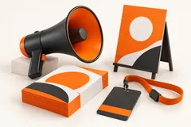
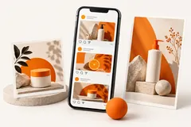
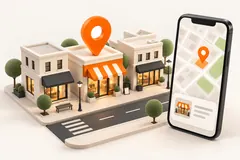

Привлечь клиентов
Рассказать о бизнесе, привести людей на открытие или поддержать продажи.

Промоутеры и распространение рекламыРаздача рекламных материалов в согласованных местах и в нужное время.Варианты и расчёт →Промоакции и открытияМатериалы и согласованный план рекламы для события или открытия.Варианты и расчёт →
Соцсети и рекламный контентОформление группы, тексты и изображения для понятного рассказа о бизнесе.Варианты и расчёт →
Яндекс Карты и 2ГИСКарточка организации с понятными услугами, фотографиями и актуальными контактами.Варианты и расчёт →Карточки товаров и АвитоИзображения и описания, которые помогают понять товар и сравнить варианты.Варианты и расчёт →Комплексная рекламаСогласованный комплект материалов под открытие, акцию или оформление точки.Варианты и расчёт →